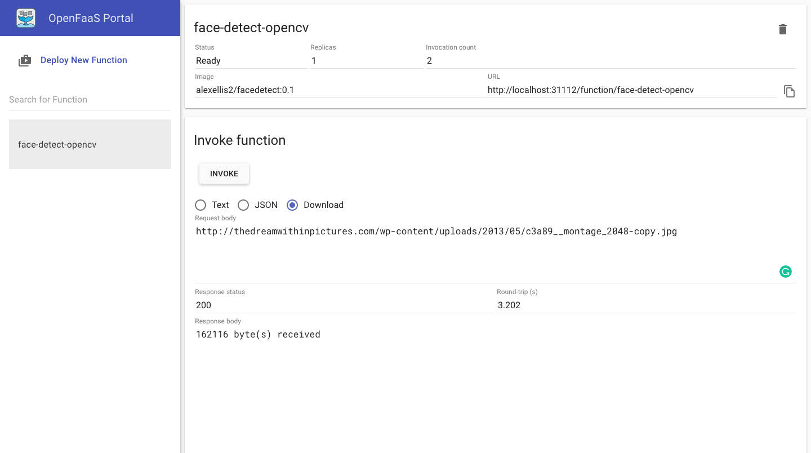

Working with functions
You can get a local environment ready using Vagrant for an automatically setting up a machine on Virtualbox. To download Vagrant follow this link where you can find the complete list based on Os System:
Vagrant installation - Windows
Download the following file and install it:
Vagrant installation - Linux
Download the package and extract it just pasting the following commands:
wget https://releases.hashicorp.com/vagrant/2.2.5/vagrant_2.2.5_linux_amd64.zip unzip vagrant_2.2.5_linux_amd64.zip
You can also use Homebrew like this:
brew cask install vagrant
If you prefer, you can use your favorite package manager. For example, in Ubuntu you can type:
sudo apt install virtualbox vagrant
Vagrant installation - MacOS
Download the dmg file and install it:
If you have Homebrew installed just type this in the command line:
brew cask install vagrant
Install Vagrant project
To be operative with the current project you have to download with git or extract the zip file.
Open your command line and paste the following commands:
git clone https://github.com/Cloud-PG/SOSC2019.git
cd SOSC2019
Now set up the vagrant environment using the following command:
./vagrant up
# Or if you have vagrant executable in your PATH
vagrant up
NOTE: This may take few minutes, depending on network and your computer performance
And then, log into the created machine:
./vagrant ssh
# Or if you have vagrant executable in your PATH
vagrant ssh
Remember also to authenticate with OpenFaaS cli before continuing:
export OPENFAAS_URL=http://127.0.0.1:31112 cat gateway-password.txt | faas-cli login --password-stdin
NOTE: Vagrant and Virtualbox are required on the machine of course. If you don't have them check the previous steps to install the packages
Some additional machines have been prepared for the school participants. You can find hot to access to your machine here
Using example functions and the OpenFaaS UI
Now you can go to http://localhost:31112/ui/ and, using the password in gateway_password.txt with user admin, you should be able to log in. To see your password just type:
cat gateway-password.txt
You will have a page like that as result after the login:

Let's start playing with some example functions. For instance, you can instantiate a function the face-detection of an online image just clicking on Deploy new function, searching for opencv and installing face-detect with OpenCV (button Deploy).


Now a new tab should appear with the function name selected.

From there you can check the status and also try to invoke the function from the UI. For instance, as soon as the status of the function is ready, let's try to put an url with a jpg image in the request body field and then press invoke.
Let's try the two below for example:
https://parismatch.be/app/uploads/2018/04/Macaca_nigra_self-portrait_large-e1524567086123-1100x715.jpg http://thedreamwithinpictures.com/wp-content/uploads/2013/05/c3a89__montage_2048-copy.jpg
For the second one you will have the following result:


The list of all available functions in the store is also available from CLI using the following command from the vagrant machine already created:
faas-cli store list
Deployment of a Python function (from OpenFaaS workshop)
Do everyone have a docker account?
mkdir astronaut-finder cd astronaut-finder faas-cli new --lang python3 astronaut-finder --prefix="<your-docker-username-here>"
Function fundamentals
The previous command will write three files for us:
./astronaut-finder/handler.py
This is the handler for the function.
NOTE: an handler get a request object with the raw request and can print the result of the function to the console.
./astronaut-finder/requirements.txt
Use this file to list any pip modules you want to install so, to manage your Python requirements, such as requests or urllib
./astronaut-finder.yml
This file is used to manage the function:
NOTE: it has the name of the function, the Docker image and any other customizations needed.
Edit ./astronaut-finder/requirements.txt and add the following dependency:
requests
Write the function's code
We'll be pulling in data from http://api.open-notify.org/astros.json
Here's an example of the result we will have from that url:
{ "number": 6, "people": [ { "craft": "ISS", "name": "Alexander Misurkin" }, { "craft": "ISS", "name": "Mark Vande Hei" }, { "craft": "ISS", "name": "Joe Acaba" }, { "craft": "ISS", "name": "Anton Shkaplerov" }, { "craft": "ISS", "name": "Scott Tingle" }, { "craft": "ISS", "name": "Norishige Kanai" } ], "message": "success" }
Let's write an handler that gets for us that result. You have to edit handler.py:
import requests import random def handle(req): r = requests.get("http://api.open-notify.org/astros.json") result = r.json() index = random.randint(0, result["number"]-1) name = result["people"][index]["name"] return "%s is in space" % (name)
Deploy the function
First, build it:
faas-cli build -f ./astronaut-finder.yml
Push the function:
docker login faas-cli push -f ./astronaut-finder.yml
Deploy the function:
export OPENFAAS_URL=http://127.0.0.1:31112 cat $HOME/gateway-password.txt | faas-cli login --password-stdin faas-cli deploy -f ./astronaut-finder.yml
And now, just wait a bit for the function to be in Ready state. Check from cli with
the following command:
faas-cli describe astronaut-finder | grep Status
You will have a result like this if everythings is up and running:
Status: Ready
and then try to invoke it from command line:
echo | faas-cli invoke astronaut-finder
You will receive this as response a random name of a docker user, like this:
Anton Shkaplerov is in space
You can also use the http endpoint:
curl http://localhost:31112/function/astronaut-finder
Or try it from the dashboard, just clicking to invoke and see the result in response body:

Homework
- Try to create a function for serving your ML model (you can also make use of: https://github.com/alexellis/tensorflow-serving-openfaas )
- Create a function in a different language if you know any